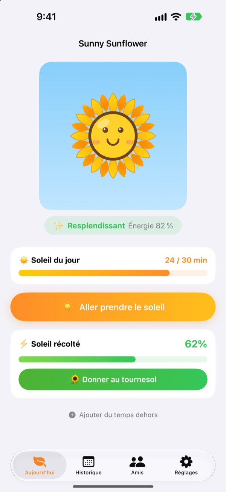
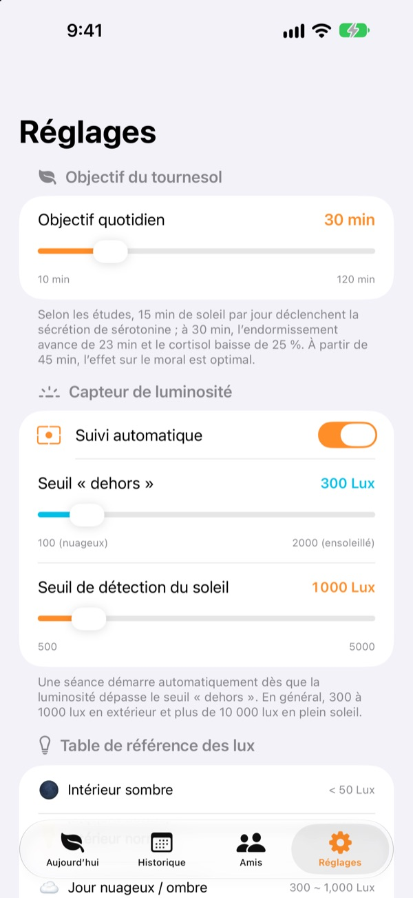
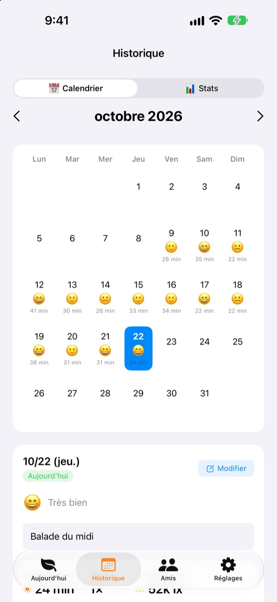
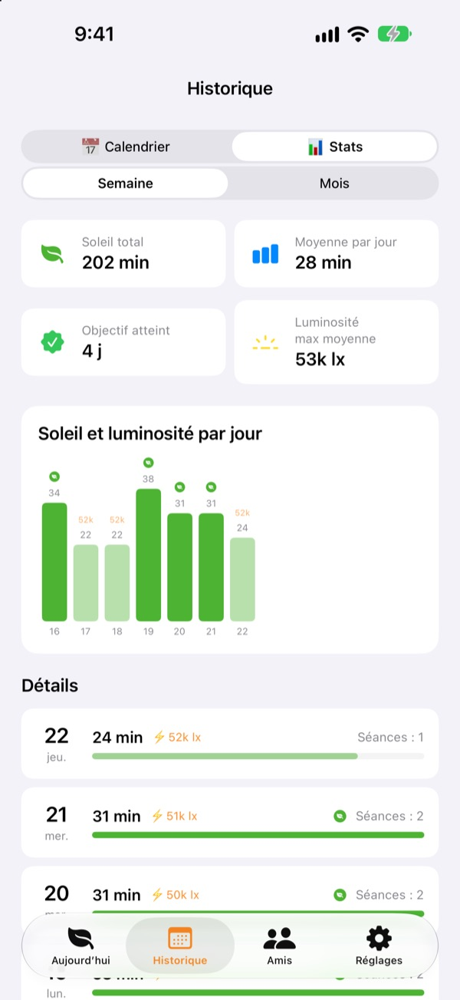

Le soleil d'aujourd'hui
fait pousser votre tournesol
Dès que vous sortez, votre temps au soleil se compte tout seul. Donnez le soleil récolté à votre tournesol et il resplendit. Oubliez-le quelques jours et il commence à se faner.
Toutes les fonctions sont gratuites. Vos données restent sur votre appareil.

Récoltez un peu de soleil
Choisissez la luminosité et la durée, prenez le soleil, puis donnez-le à un tournesol qui commence à piquer du nez.
Combien de minutes de soleil avez-vous pris aujourd'hui ?
Quelques pas pour aller au travail, une sortie rapide à midi. Quand on passe la journée à l'intérieur, on se rend compte le soir qu'on n'a presque pas vu la lumière du jour. Sunny Sunflower traduit votre temps dehors en chiffres, et votre tournesol attend la balade de demain.
Sortez, il mesure tout seul
Touchez Aller prendre le soleil et sortez. L'app estime la luminosité autour de vous grâce aux données d'exposition de la caméra avant. Quand la lumière reste aussi forte que dehors pendant une trentaine de secondes, l'enregistrement démarre. Aucune photo n'est prise ni enregistrée.
Ensuite, le capteur ne s'allume que 20 secondes toutes les 2 minutes pour économiser la batterie.

Soleil et humeur, jour après jour
Dans le calendrier, chaque jour garde son temps au soleil, un emoji d'humeur et une petite note. Vous étiez dehors sans enregistrer ? Avec Ajouter du temps dehors, ajoutez de 5 à 120 minutes.

Votre semaine et votre mois d'un coup d'œil
Les statistiques hebdomadaires et mensuelles montrent les jours où vous avez atteint votre objectif et votre moyenne au soleil. Fixez un objectif quotidien de 10 à 120 minutes et voyez sur l'écran principal combien il vous reste aujourd'hui.
Les widgets de l'écran d'accueil et de l'écran verrouillé, ainsi que la Dynamic Island, affichent le soleil du jour et l'état de votre tournesol.

Trois étapes pour commencer
- 1
Fixez votre objectif
Il est de 30 minutes au départ. Réglez-le entre 10 et 120 dans les réglages.
- 2
Sortez au soleil
Touchez
Aller prendre le soleilet sortez avec l'app ouverte. L'accès à la caméra n'est demandé qu'une fois. - 3
Nourrissez le tournesol
Touchez
Donner au tournesolpour transformer le soleil récolté en énergie.
Comment la lumière devient du soleil
- Moins de 300 lux
- Lumière faible : ne compte pas comme temps au soleil
- De 300 à 1 000 lux
- Dehors / nuageux : 1 à 3 % toutes les 10 minutes
- De 1 000 à 10 000 lux
- Soleil : 3 à 33 % toutes les 10 minutes
- À partir de 10 000 lux
- Plein soleil : plus de 33 % toutes les 10 minutes
- Soleil récolté
- minutes × lux moyens ÷ 3 000 (100 % au maximum par séance)
- Énergie du tournesol
- baisse de 2,5 % par heure, environ 60 % par jour
Le seuil « dehors » se règle entre 100 et 2 000 lux dans les réglages. Par défaut, il est de 300 lux.
Questions fréquentes
Comment le soleil est-il mesuré ?
L'app estime la luminosité autour de vous (l'éclairement) grâce aux données d'exposition de la caméra avant. Quand la lumière reste aussi forte que dehors un petit moment, l'enregistrement démarre tout seul. Aucune photo n'est prise ni enregistrée.
Est-ce que ça vide la batterie ?
Une fois le soleil confirmé, le capteur ne reste pas allumé : il se réveille environ 20 secondes toutes les 2 minutes pour vérifier, et un simple minuteur fait le reste.
Mon tournesol fane sans arrêt.
Le tournesol perd 2,5 % d'énergie par heure. Récoltez du soleil puis touchez Donner au tournesol. Par temps clair, 15 à 20 minutes en plein soleil suffisent à compenser une journée entière.
J'étais dehors mais rien n'a été enregistré.
Utilisez Ajouter du temps dehors, en bas de l'écran principal, pour ajouter de 5 à 120 minutes. Si l'enregistrement a du mal à démarrer par temps couvert, baissez le seuil « dehors » dans les réglages.
Comment fonctionne la fonction amis ?
Si vous êtes proches (à 10 m environ) et que vous mesurez tous les deux le soleil, vous êtes connectés automatiquement. Avec une nouvelle personne, il faut d'abord confirmer que vous prenez le soleil ensemble ; ensuite c'est automatique. Vos pétales se colorent puis retrouvent leur couleur en 3 jours, et votre temps partagé s'affiche dans l'onglet Amis. Vous avez besoin tous les deux de l'app et d'autoriser l'accès au Bluetooth et au réseau local.
C'est vraiment gratuit ?
Oui. Ni publicité ni achat, toutes les fonctions sont incluses. Si l'app vous plaît, vous pouvez laisser un pourboire, mais il ne débloque rien de plus.
Puis-je sauvegarder ou transférer mes données ?
Tout reste sur votre appareil, sans serveur, et les 90 derniers jours sont conservés. Il n'y a pas d'export séparé, mais vos données sont incluses dans la sauvegarde habituelle de l'iPhone sur iCloud ou sur ordinateur.
Comment tout effacer ?
Dans les réglages de l'app, touchez Réinitialiser les données, ou supprimez l'app. C'est définitif.
Où signaler un bug ?
Écrivez à l'adresse ci-dessous ou ouvrez une issue sur GitHub (github.com/M1zz/SunlightTracker/issues). Le modèle de l'appareil, la version d'iOS et ce qui s'est passé nous aident beaucoup. Nous répondons généralement sous quelques jours.
Une question, une idée ? Écrivez à leeo@kakao.com.